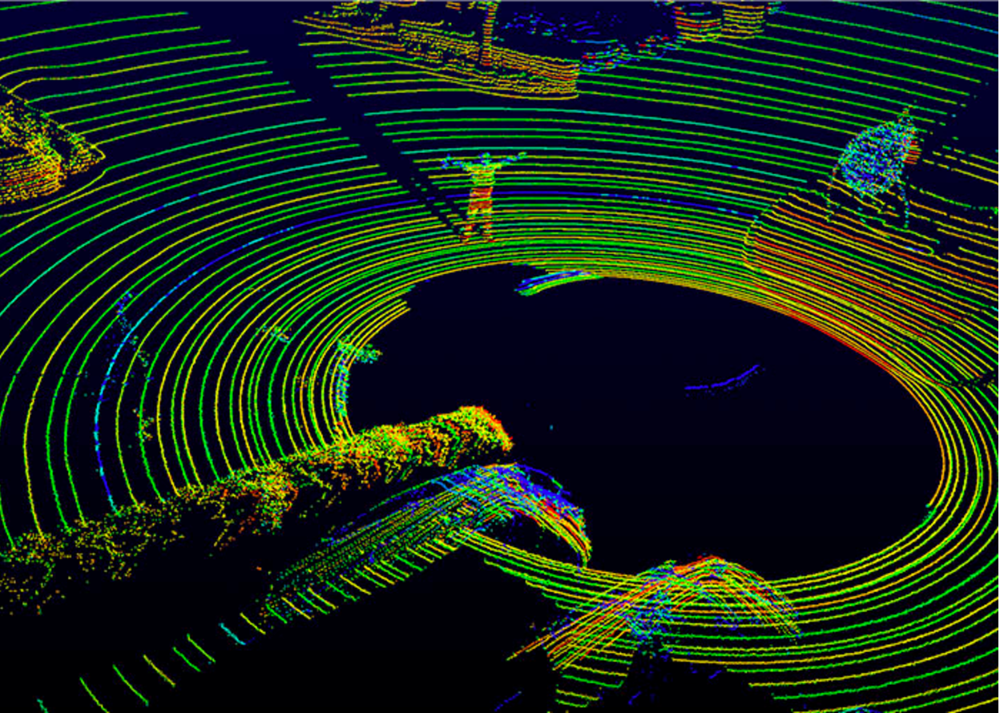
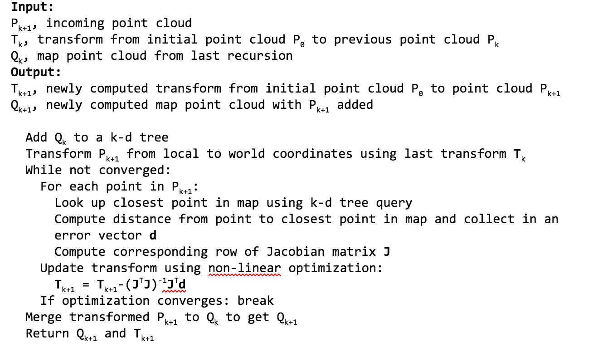

Adriel Luo and Amanda Eng
We are going to implement lidar mapping, an algorithm for doing SLAM with lidars, with parallelism so that it runs faster.
Simultaneous localization and mapping (SLAM) is the problem of constructing or updating a map of an unknown environment while simultaneously keeping track of an agent's location within it. With the growing popularity of self-driving cars, lidars are ubiquitous as a means of mapping the environment and localizing.
A lidar sensor sends out many laser beams to generate a point cloud that enables the computation of the distance to surrounding objects. These point clouds represent the surrounding environment, such as in the image below. However, a point cloud is only conveys information at a specific time. To determine one’s movement, a sequence of point clouds are generated over time. The lidar mapping algorithm we intend to parallelize for this project finds the differences between these point clouds to determine one’s movement and relative position over time.
Lidar mapping is an algorithm that is used to perform SLAM with lidars. The general algorithm that is repeated with every new point cloud is as follows:
There are many opportunities for parallelism in this algorithm. The insertion of points into the k-d tree is an interesting problem. Points in a point cloud can be worked on in parallel. Parallelism could be achieved with threads, or with vector instructions.
The insertion of points into the k-d tree is challenging because it involves multiple threads trying to modify the data structure concurrently. It would also be challenging because we are going against PCL’s highly-optimized sequential implementation of a k-d tree.
Original publication describing algorithm
Video of map built and position computed
Speedup vs parallelism technique (threads, SIMD etc.)
Macbook: The algorithm should be able to run off an average laptop and not require dedicated hardware. More importantly, it should run on laptop-sized computers because you want the algorithm to be able to run on autonomous vehicles which will not have large or expensive computers.
C++: PCL is a C++ library
| Date | Item |
| Monday 4/10 | Submit proposal |
| Monday 4/12 | Install required libraries/software: PCL and required dependencies OpenMP ISPC |
| Monday 4/17 | Sequential implementation of algorithm completed |
| Tuesday 4/18 | Analyze where most computation occurs per iteration of algorithm to decide which parts are most worth parallelizing |
| Monday 4/24 | Successful parallelism over points in point cloud using OpenMP, hopefully with substantial speedup Look into parallelizing over points with ISPC |
| Tuesday 4/25 | Project checkpoint |
| Monday 5/1 | Look into parallelizing k-d tree construction |
| Monday 5/8 | Finalize project and prepare for presentation |
| Friday 5/12 | Project presentation and final write up |